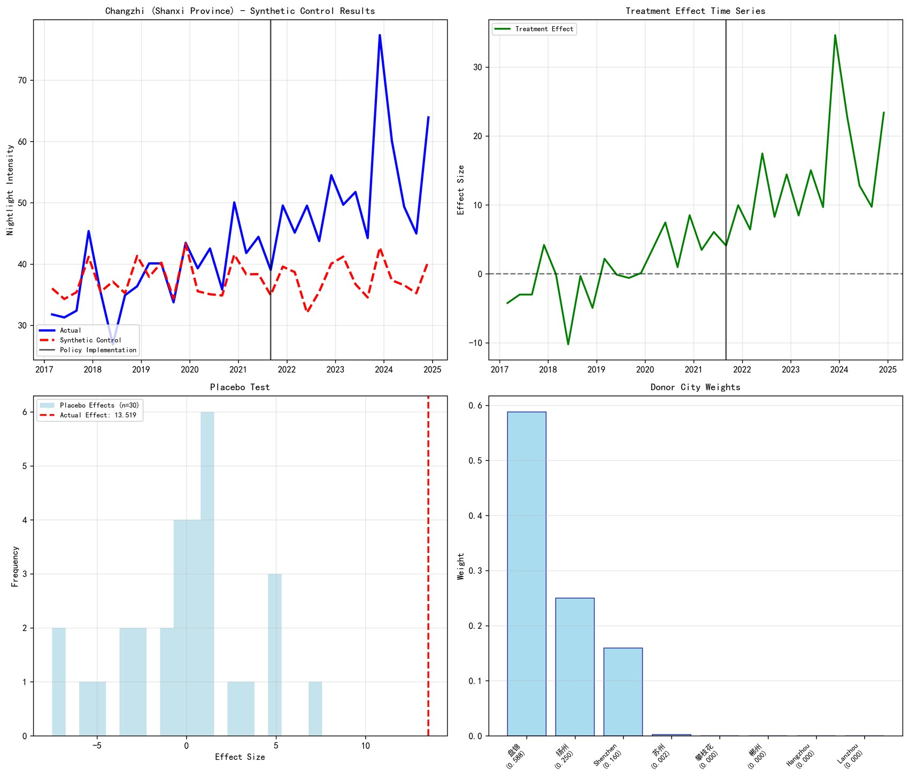

Identity formation, online expression, and political perception
Yidan Xia
I am interested in how identities are expressed, circulated, and reshaped in networked environments, how these processes interact with perceptions of international relations, and how economic background conditions what becomes visible, persuasive, or contested.
Research Projects
My projects often begin with a concrete trace: a phrase circulating online, a policy claim, a spatial pattern, or a data source that seems to make social life observable. The work is in testing what those traces can and cannot tell us.

Did Double Reduction Really Reduce Burden?
A synthetic control study using school and residential nighttime light data, followed by a GIS check of whether the proxy itself can survive scrutiny.
Online Identity Formation
Future work on how people perform, negotiate, and stabilize identity in digital spaces, especially when political and international narratives travel through networks.
Perceiving International Relations
Future work on how international relations are sensed through everyday media, economic experience, and identity-based interpretation.
Research Style
I follow questions from lived experience to observable traces, then test whether those traces can support the interpretation I want to place on them.
Formation Questions
I begin with formation questions: how people come to name themselves, recognize others, and attach political meaning to social positions, media events, and international narratives.
Empirical Caution
I treat digital traces, spatial data, and texts as evidence, but also ask what each trace excludes. The method has to account for the medium through which identity becomes observable.